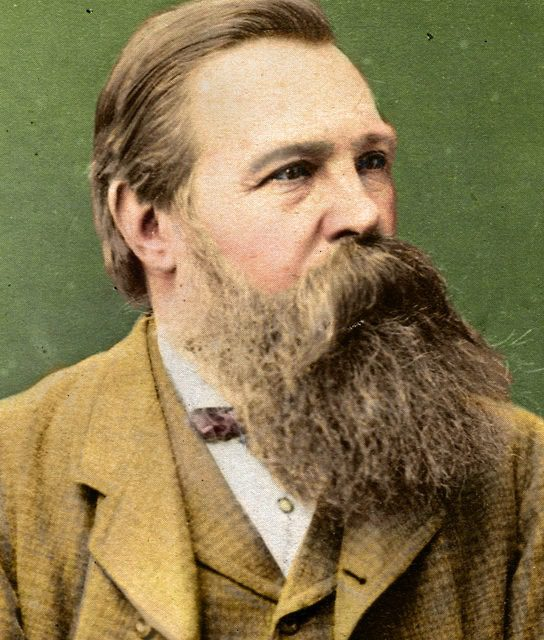

¿Quien es Friedrich Engels?

HISTORIA
Friedrich Engels, filósofo y sociólogo, colaboró con Karl Marx en el desarrollo del comunismo. Observó las condiciones de los trabajadores en las fábricas y escribió sobre ellas en La situación de la clase obrera en Inglaterra. Junto a Marx, publicó El Manifiesto Comunista en 1848, que proponía la lucha de clases como motor del cambio social. Tras la muerte de Marx, Engels continuó promoviendo sus ideas y completó varios de sus trabajos. Su influencia es fundamental en el pensamiento socialista.
NACIONALIDAD
Friedrich Engels nació el 28 de noviembre de 1820 en Barmen, una ciudad que en ese entonces formaba parte del Reino de Prusia, lo que hoy corresponde a Alemania. Su nacionalidad alemana fue clave en su contexto cultural e intelectual, ya que estuvo inmerso en las ideas filosóficas y políticas que circulaban en Europa durante su época.
INFLUENCIAS
- Karl Marx: Su colaboración con Marx fue clave, ya que juntos desarrollaron el materialismo histórico y la teoría comunista.
- Georg Wilhelm Friedrich Hegel: La dialéctica hegeliana influyó en Engels, quien la adaptó al materialismo histórico.
- David Ricardo: Su teoría del valor-trabajo ayudó a Engels a entender la explotación en el capitalismo.
- Ludwig Feuerbach: El materialismo de Feuerbach influyó en Engels, especialmente en su crítica a la religión.
- Condiciones sociales en la Revolución Industrial: La pobreza de los trabajadores industriales en Inglaterra motivó su análisis sobre la clase obrera.
CONTRIBUCIONES
- El Manifiesto Comunista: En 1848, Engels y Marx publicaron este manifiesto, que se convirtió en un texto fundamental del movimiento socialista, abogando por la revolución proletaria y el fin de la explotación capitalista.
- Teoría del comunismo: Engels contribuyó a la formulación de la idea de una sociedad sin clases, donde los medios de producción sean de propiedad colectiva.
- Estudios sobre la familia y el Estado: Su obra El origen de la familia, la propiedad privada y el Estado aportó una visión materialista sobre cómo estas instituciones surgieron y se transformaron a lo largo de la historia.
- Difusión del marxismo: Tras la muerte de Marx, Engels fue clave en la difusión y desarrollo del marxismo, completando y publicando trabajos póstumos de Marx, y defendiendo las ideas comunistas.